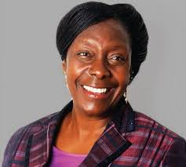

women are used as political tool so as to have power status,we see these through chief abeeeku's who marries two wives in the world today women are in power andare not used to gain power or fame
women are used for continuity.they are expected to have children thats why Effia's menstrual periods were important.in the world today people marrry for companionship.having children being a choice
Women are starred, abused, and have their babies taken away. In the world today each and every mother [parent] has the right to be with their babies
In the gold coast women are largely responsible for watching over their children, cooking, whereas men control their fates.Abena cannot marry because her father is not wealthy, thus treated like an old mistress. Today, domestic chores are not only meant for women but also for men. Both men and women can provide food on the table.
Women were not required to take roles that require physical strength nor even become soldiers. Today men and women take the same roles also the army is free for anyone despite the gender.
Women bear the brunt of suffering because they struggle under institutions of patriarchy and slavery. Women are inhumanely chained, stocked together and locked up in dungeons. Slavery is not a lifestyle anymore we live in democratic society where each and every voice at least can be heard. Rights and freedoms of citizens are adhered.
Women are physically assaulted for no reason, big man beats up Esi in order to maintain his macho image and not mistake for weakling. They endure physical torment once in the hands of the owner, who whips her every time her child speaks in a native language. Today physical torture to all women is not allowed.
Suffer victimization and treated as commodities. When Ohene fails to get a good harvest the entire village blames Abena for his ill luck. Ohene promises to marry her only when the harvest improves but eventually betrays and abandons the pregnant Abena for another woman hand in marriage. Today, divorce is there, but despite both of them not being together the father of the kids have the responsibility to the kid.
In reference to the homegoing, one of the womens roles was marriage.ABeeku needsto marrry two women in preparation of him being a chief.we see baaba begins to plot against women as she forces Effia tolie in a way that abeeeku will not marry her,marriage being a key role.In the world today marriage is not a key role to our women,since most of them prefer being single
In the homegoing,women are meant for continuity through their motherhood.we see this with Baaaba giving birth to fiffia whom she protects so much.the moment Effia accidentally drops him Baaba beats her up with her stirring stick,leaving her burning into flesh.featuring the world today women each and every woman dreams and desires to have a kid of their own whom they can treat and raise in the own.
The family being the new centrepiece of the kenyan women are said to work doublework days than men.According to the new constitution 2010 specifically gave women legal rights as men to land,court access ,inheritance,Nationality,freedomof novement.agricultural sector also shows women do more of food production,cashcrop production for thesake of their families
viewed as source of dowry when she gets married .for rural families the dowry could be livestock for urban families,cash or goods
More and more Kenyan women are role models. Conservationist Wangari Maathai fought against a housing development planned for the Karura Forest. In 2003, she was appointed the deputy minister in the Ministry of Environment, Resources, and Wildlife. She received the Nobel Peace Prize in 2004. • Lorna Kiplagat is a four-time World Champion. She won the Los Angeles Marathon twice. She set up the first Kenyan high altitude training center for runners. She is a successful businesswoman and philanthropist, and she started the Lorna Kiplagat Foundation. • Hon. Lady Justice Njoki S. Ndun’gu is a Judge of the Supreme Court of Kenya. She is the architect of the Sexual Offenses Act of 2006, the maternity and paternity leave amendments to the Employment Act of 2007, and the amendments on affirmative action for women in political participation to the Political Parties Act in 2007. • The government-funded Women’s Enterprise Fund (WEF) has helped 864,920 women fund businesses and trained more than 404,800 women on business management skills. 19 A woman casts her vote for president. In 1997, Charity Ngilu became the first Kenyan woman to run for president.
CONGRATULATIONS WOMEN